This document outlines the development of a CdA estimator for Garmin Edge computers with power meter sensors.
The CdA estimator helps riders optimize position and equipment for maximum speed. Once restricted to wind tunnels or expensive specialized sensors, low-cost technologies from drones and IOT, now enables DIY solutions. These tools offer a practical way to refine performance in real-time.
The solution scales from basic Garmin headset data to the use higher-precision external sensor data. It uses the most accurate variables available, with built-in fallbacks to less reliable data sources.
We solve the real-time Bicycle Equations of Motion, because cyclists are flexible bodies on a bike; shifting positions alter both frontal area and shape. To account for this, we combine the Coefficient of Drag (Cd) and Area (A) into a single metric—CdA
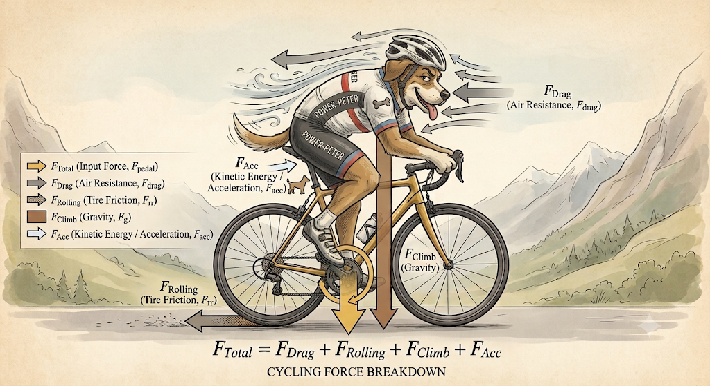
CdA estimation relies on categorizing power consumption components, isolating the Drag, then breaking out the CdA. CdA values are saved to the FIT file with standard Garmin metrics. Granular metrics and raw calculations are stored in the external sensor log when connected and configured.
GARMIN Head Unit
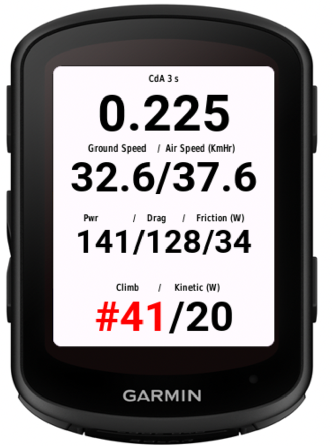
This is an entertaining programming problem, and an introduction to sensor technologies, I’ve become a fan of the M5Stack (https://m5stack.com/) products, easy to understand and connect. The boring or technical bits are in the appendixes.
All physics models are effective; an effective model intentionally ignores microscopic complexities to describe the macroscopic behavior; it uses insufficient or incomplete details and over simplifications that become invalid in some circumstances - that's the warning.
The CdA estimator uses a physics-based power balance equation to isolate aerodynamic drag from other power consuming forces:
P_total = P_drag + P_rolling + P_climb + P_kinetic + P_drivetrain_loss
Expanded form:
P_total = ½ρ·CdA·v_air²·v_road + C_rr·m·g·v_road + m·g·(dh/dt) + ½m·d(v_road²)/dt + P_drivetrain_loss
P_total: Power measured by a power meter.
Drag: Power required to overcome aerodynamic resistance. This is the quantity isolated for the CdA calculation:
P_drag = ½ρ·CdA·v_air²·v_road
P_drag = P_total − (P_rolling + P_climb + P_kinetic + P_drivetrain_loss)
Rolling: Power consumed by tire rolling resistance. The tire contact patch deforms and recovers but does not return all the energy used to deform it. The simplified equation is:
P_rolling = C_rr·m·g·v_road
Rolling resistance also depends on slope and road surface, but this effective model ignores those effects. For clinchers with latex tubes, C_rr is approximately 0.0035–0.0045. At 36 km/h and a combined bicycle and rider mass of 90 kg, this corresponds to roughly 31–40 W. Published C_rr values are available for major tire brands.
Climb: Power consumed or contributed by the rate of change in gravitational potential energy:
P_climb = m·g·(dh/dt)
Here, dh/dt is vertical speed. It can be estimated using barometer or accelerometer data. Small errors are significant. For example, a 90 kg combined bicycle and rider climbing at a road speed of 5 m/s on a 10% gradient has a vertical speed of approximately 0.5 m/s and requires about 441 W for climbing alone. Descending makes this term negative.
Kinetic energy: Power consumed while accelerating or contributed while decelerating:
P_kinetic = ½m·d(v_road²)/dt = m·a·v_road
No change in kinetic energy indicates constant velocity. To approximate the rotational inertia of the wheels, the model multiplies mass by an INERTIA_FACTOR of 1.04 when calculating kinetic power.
Drivetrain: Chain and bearing friction typically consume about 2–3% of rider power. The model uses:
P_drivetrain_loss ≈ 0.025·P_total
This is approximately 5 W at 200 W. The display combines drivetrain and rolling losses under “Friction”; both treatments are simplifications.
ρ (air density): Calculated using pressure, temperature, and humidity sensors. Air density affects aerodynamic drag and the altitude estimate used for climbing power. The simplified dry-air equation is:
ρ = P/(R_specific·T)
Notes:
1,000 m elevation gain, reduces air density by about 10%.
10C temperature increase reduces air density by about 3%.
At 30C and 90% humidity, the air density is about 0.6% to 0.8% lower than dry air 0% humidity, resulting in CdA will appear roughly 0.7% lower. Humidity correction not discussed here.
v_air: Airspeed in the direction of travel. Tail winds and yaw are not considered when present, air speed may be under-estimated. Basic sensors have reliable lower reading ranges of roughly 10–15 km/h (3–4 m/s), below 10 km/h, the sensor may drift up randomly even if the bike is still.
v_road: Ground speed. The Garmin GPS can lag by 3 seconds or drop out, so wheel magnet measurements are desirable. (using Speed and Velocity interchangeably here)
C_rr: Coefficient of rolling resistance, a dimensionless value that estimates tire energy loss; ratio of force required to keep a tire rolling to vertical load (weight).
m: Combined mass of the rider and bicycle: rider mass + bicycle mass.
g: Earth’s gravitational acceleration at the surface, approximately 9.81 m/s².
The application is a Connect IQ Data Field that operates in two modes:
Garmin-Only mode using internal sensors
Garmin + Sensor Hub mode that fuses data from an external Sensor Hub via Bluetooth Low Energy (BLE) messages.
Indicates if using sensors and averaging duration
The display shows the current CdA, or a status message such as “Slow” or “Wait”. It also shows ground speed from GPS or a wheel magnet and airspeed from the sensor.
Power meter reading/ estimated power loss to aero drag/ loss to tire and drive train friction
Power from PE and KE.
contribution indicated by #
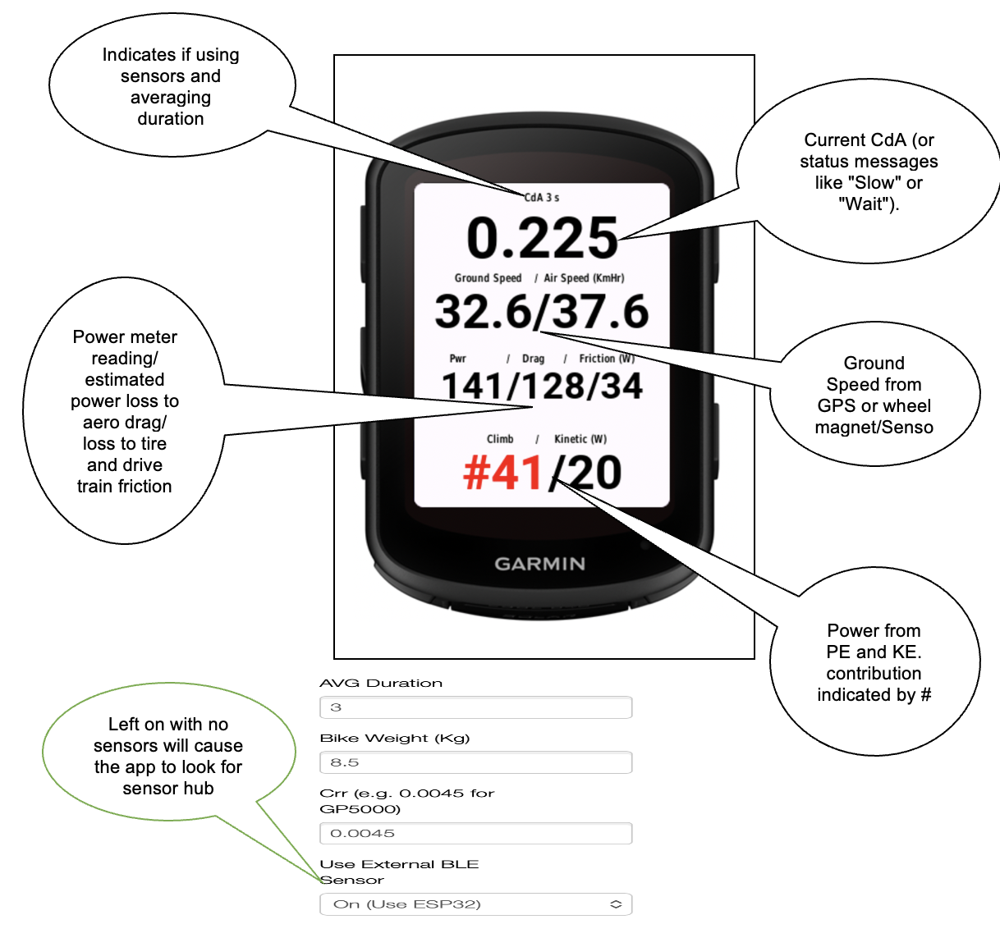
Left on with no sensors will cause the app to look for sensor hub
Garmin headsets can’t easily send commands or data to the sensor hub, e.g.: send the defined, wheel circumference or recorded rider mass. However, it’s possible by attaching BLE messages to button presses. (not tested this one).
Example test data stream
Garmin’s OS collects raw metrics, processes them through internal
filters, and populates a single Activity.Info snapshot once
per second (1 Hz).
[GPS Satellites] ───────┐
[Internal Barometer] ───┼──> [Garmin OS Engine] ──> [Activity.Info Snapshot] ──> Data Field
[ANT+ Power/HR] ────────┘ (Processes & Filters) (Once Per Second) (compute() loop)Using only the Garmin headset, the values of from Garmin's sensors are used, together with the mandatory external Power Meter readings, and configurations.
Dynamic Configuration: reads settings from Garmin Connect IQ, (e.g.: AVG_Duration, Bike Weight, Body Weight in Profile), that change model's sensitivity without recompiling.
Metrics: Buffers are kept for key data for user defined duration:
Altitude
Garmin's absolute altitude readings are smoothed by a Kalman filter.
Garmin altitude change is processed by an Exponential Moving Average (EMA), where the "responsiveness" of the EMA is calculated dynamically based on user-defined duration - the average in seconds to be reported..
Speed
speedAvgMSec uses Simple Moving Average (SMA) for duration
currentSpeedSqDiff, used to estimate Kinetic Energy power:
A Jitter Threshold is applied so likely noise are zeroed out before being stored .
currentSpeedSqDiff uses Simple Moving Average (SMA) for duration.
Drag factor (speedAirSensorMSec * speedAirSensorMSec) * speedMSec with no sensors, speedAirSensorMSec = speedMSec. It uses a Simple Moving Average (SMA) over duration.
Density
Without Sensor Hub input these data are used in CdA calculations.
Logging:
The Garmin-only is extended, the key addition is airspeed. Altitude information is also provided that augments/ enhances Garmin's.
Garmin Connect IQ apps act as Generic Attribute Profile (GATT) clients only. Message payload is limited to 20 bytes. Peripheral devices, (GATT Servers), must chop any payload into packets and send them sequentially, the Garmin app must rebuild them.
Bluetooth Low Energy, BLE, Management: Scans for specified service UUID. Data is passed as delimited strings and reassembled on the Garmin, the data meaning is positional.
Garmin Activity.Info is refreshed at 1 Hz; messages from sensor hub to Garmin are sent at 250ms, 4 Hz, and used to create a rolling 1 sec, (1 Hz), data average and sum for altitude difference. (Note the C++ and Monkey C parameters must be synchronized). See Appendix 0‑5 - Handling Two Clocks.
The following sensors are supported, using the I2C protocol:
┌────────────────────┬──────────────────────┬──────────────────────────────────────────────┬─────────────┐
│ Sensor │ Measures │ Main purpose │ Approx. cost│
├────────────────────┼──────────────────────┼──────────────────────────────────────────────┼─────────────┤
│ MS4525DO │ Airspeed │ Differential Pitot/static pressure │ $25–$40 │
├────────────────────┼──────────────────────┼──────────────────────────────────────────────┼─────────────┤
│ DHT20 + BMP280 │ Pressure, temp., │ Estimate altitude and air density │ $4–$8 │
│ │ humidity, density │ │ │
├────────────────────┼──────────────────────┼──────────────────────────────────────────────┼─────────────┤
│ BMP390 │ Pressure, temp., │ High-precision altitude and air density │ $10–$15 │
│ │ air density │ │ │
├────────────────────┼──────────────────────┼──────────────────────────────────────────────┼─────────────┤
│ Power meter │ Rider power │ Measure total power entering the system │ $200–$1,000 │
├────────────────────┼──────────────────────┼──────────────────────────────────────────────┼─────────────┤
│ Wheel-speed magnet │ Ground speed │ Accurate short-timescale speed; preferred │ $15–$30 │
│ │ │ over GPS when available │ │
└────────────────────┴──────────────────────┴──────────────────────────────────────────────┴─────────────┘Note: Power Meters and Wheel Magnet Sensors support both ANT+ and BLE
See Appendix 0‑3 Sensor Details for the hub sensor options
To provide additional validation data:
Climb rate: detects changes in vertical velocity (Δv_alt) in the direction of gravity, can be used as an additional source for altitude gain.
Kinetic energy detects changes in road velocity (Δv_road) in the direction of travel. An alternative calculation is P_KE = m·a·v_road.
Integrating a rear-facing, handlebar-mounted micro-LiDAR /Tof camera could create an automated Aerodynamic Position Classifier. Instead of treating the rider's shape, the sensors combine with machine learning models could match distinct geometric postures directly to their corresponding real-time drag values. Collected data could train a model, which is then used as classifier for good positions, the VL53L5CX has been tested and discussed in Appendix. An AI camera with depth perception is also an option. Logging on SD is mandatory with these approaches.
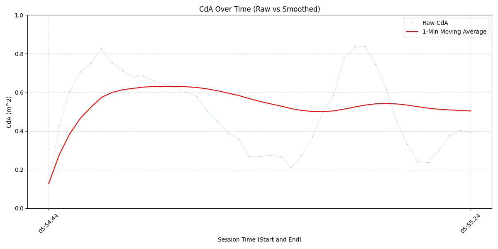
** **
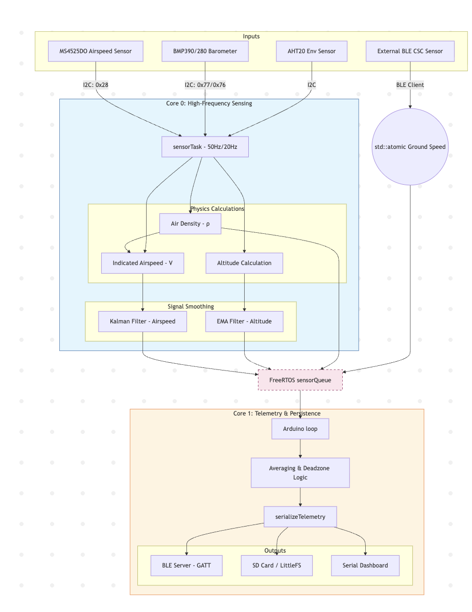
Sensor Hub is based the ESP32-S3, a dual-core architecture micro controller. Sensor sampling, and communication and storage tasks, can be decoupled. See Appendix 0‑6 - Micro Controller Hardware.
Below is the ESP32-S3 workflow:
Hardware Stabilization: A 2-second delay when connected.
Storage Mounting: If ESP logging set, attempts to mount persistent storage.
Bus Integrity: Performs a bit-bang test on I2C pins to check for stuck lines or missing pull-ups before initializing the Wire bus at 100kHz.
Sensor Discovery: Scans the I2C bus for the MS4525DO Airspeed sensor and the BMP390/280/ AHT20 sensors, and others if added.
Calibration:
Samples the air for zero-pressure offsets for airspeed.
Ground-level pressure (for altitude reference), and other if present.
Task Launching:
Sensor Acquisition Workflow - sensor Task on Core 0
Aggregation and Telemetry Workflow - loop () on Core 1
The design assumes dual-core, it was written to also work on a single core, without queuing but not fully tested.
This task handles the sensor reads:
Sampling: Sampling is set by sensor, e.g.: 50 milli second 20 Hz.
Smoothing:
Airspeed raw data is passed through a** Kalman Filter **
Altitude uses an Exponential Moving Average (EMA to remove noise.
Density rolling average calculated
Queueing: values are put on the Sensor Queue. this decouples high-speed sensing from slower transmission and logging tasks.
Runs the aggregation, logging and transmission:
Drain Queue:
Create rolling average for point samples, e.g.: airspeed, air density, others
Calculate accumulated altitude change (Climb/Descent) by comparing consecutive Altitudes, it uses the last sample from previous BLE_PUBLISH_INTERVAL as the starting point to avoid jumping, a 5cm dead zone is applied.
External Sensor Sync: Collects data from external sensors e.g.: Power Meter, Wheel Road speed magnet, this could allow, the hub to bypass the Garmin headset completely, using a display, or publish to website.
Ground Speed: acts as a BLE Client to a remote cycling speed sensor, calculating ground speed based on wheel revolutions (implemented but not used - testing too much hassle, originally considered passing the complete calculation to Garmin, so it would become only a display unit.)
Formatting: A subset of data are formatted into a pipe-delimited, "|", string, terminated by "*". Garmin logic is required to handle deformed messages, as they can "go missing".
Secure Digital SD Card (SPI): high-capacity logging.
LittleFS (Internal Flash): if a SD card is not present; this is useful in development.
For local logging HH:MM: SS|Data| is added for all data items. Standard ESP32 records elapsed time from session start, not actual time, which would require a timing chip.
This log can be used for additional analysis, as FIT files require detailed setup. it's available in the development environment. When connected to development Serial Monitor a command menu is available:
Operational commands
Transmission
Messages are chunked and transmitted.
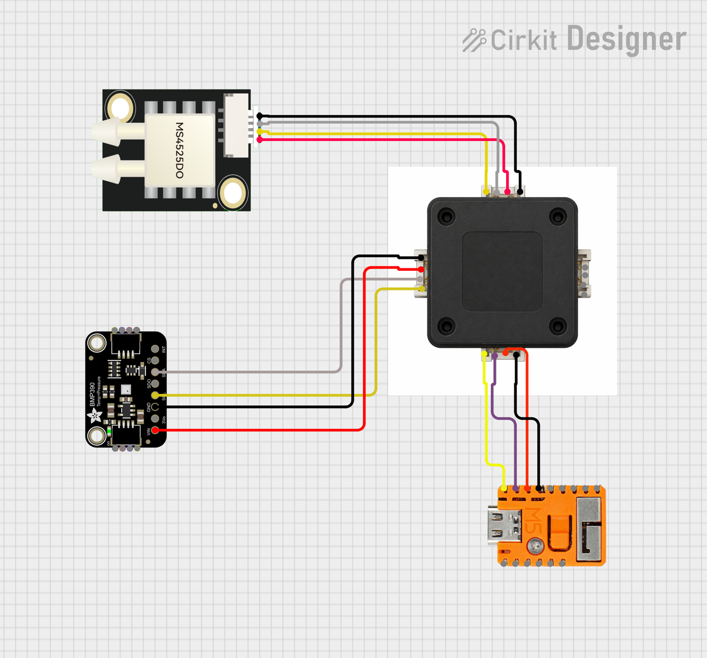
Sensor fusion combines data from multiple sensors to get result that is more accurate/reliable, than a single sensor. Sensors operate with different accuracy, potentially measuring complementary observables. The "fusion" of sensor result can produce more accurate overall measurements. Fusion combined with smoothing and Kalman filters, (see Internet for many explanations), provide the best results. Some sensor combinations:
| Sensor fusion | Output | Usage in CdA model |
|---|---|---|
| MS4525DO + BMP390 | Airspeed | BMP390 supplies pressure for altitude and temperature for air-density calculation. MS4525DO falls back to a fixed air-density value and its internal temperature. |
| MS4525DO + DHT20 + BMP280 | Airspeed | BMP280 supplies pressure for altitude and air-density calculation. DHT20 supplies the preferred temperature measurement when available. |
| DHT20 + BMP280, or BMP390, combined with Garmin altitude | Altitude change | A complementary filter assigns 90% weight to the external sensor and 10% to Garmin altitude. If external data is unavailable, Garmin receives 100% weight. |
| BMP390, or DHT20 + BMP280 | Air density | Overrides the Garmin air-density calculation. |
Poor placement of this senor will make the airspeed calculation useless, use this criteria:
The sensor must not be is the wash of the front wheel.
The sensor must not be so close to the frame and rider, that changes in the riders position, (which we are analyzing), changes the airflow around the sensor. We are trying to independently measure the airspeed.
The stem to should be rigid enough that its movements are not generating its own airflow.
Below is the connection layout using I2C (power supply not shown). The Grove standard uses the following:
Pin 1 — SCL (yellow): Serial clock line for timing synchronization.
Pin 2 — SDA (white): Serial data line for sending and receiving bits.
Pin 3 — VCC (red): Power supply, typically 3.3 V or 5 V depending on the device.
Pin 4 — GND (black): Common ground reference.
Care of the pin order is needs attention, every vendor, unless 'real' Grove may have a different layout.( Note: M5 allows redefinition of the Grove connector GPIO ports)

This section shows some pictures of the development stages:
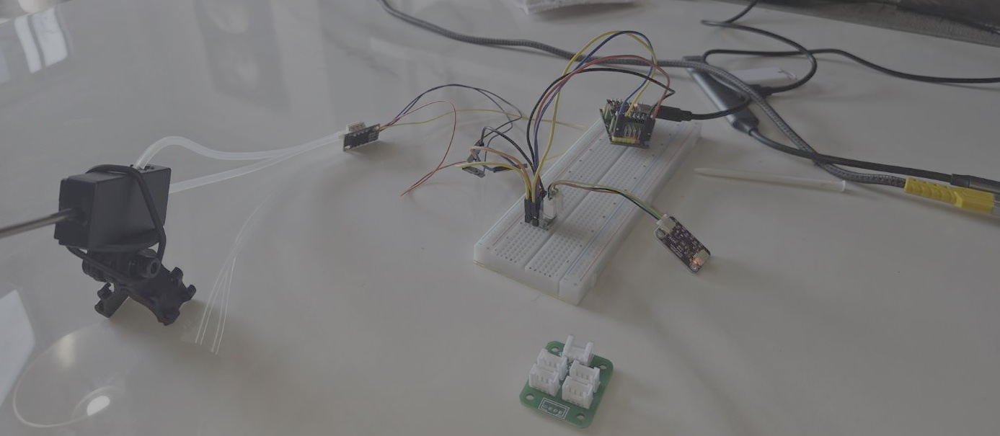
ESP32 Dev board connected to Garmin Simulator
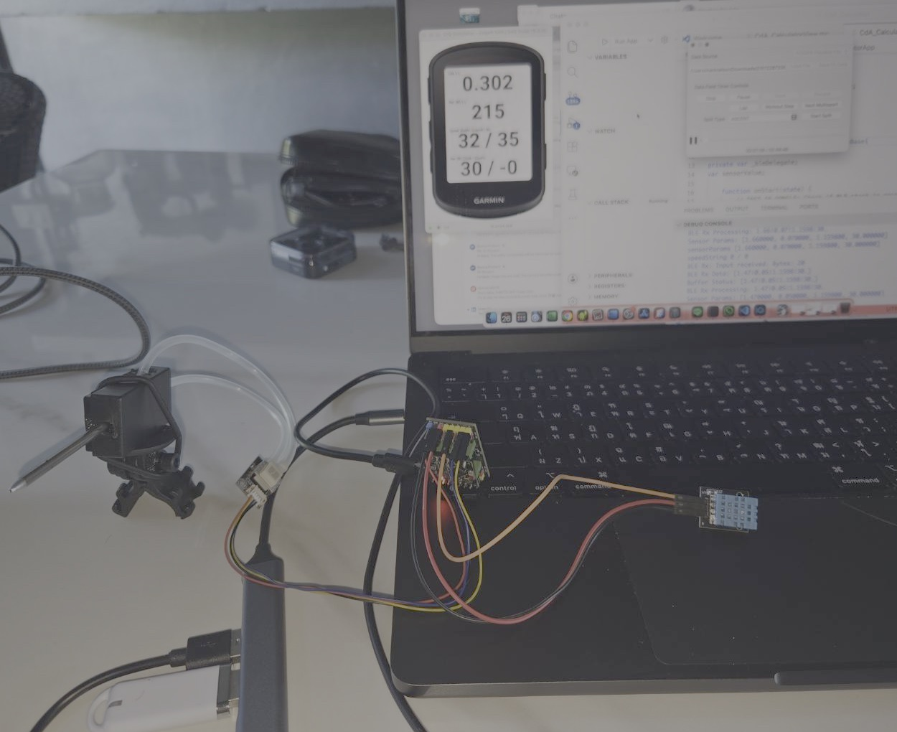
Both of the solution below work, its possible to make more streamlined solutions, (using the M5Stamp Capsule would simpliify wiring). The neater approach would be a custom PCB board, the relevent chips mounted, and waterproofed.
Integrated sensor prototype: Small airspeed sensor, BMP280, multi-port Grove adapter, and built-in battery.
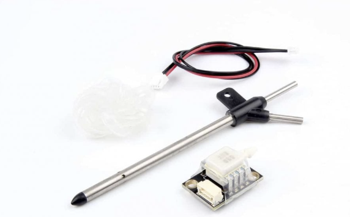
External Pitot-tube prototype: Airspeed sensor with external Pitot tube and BMP390; requires an external battery.
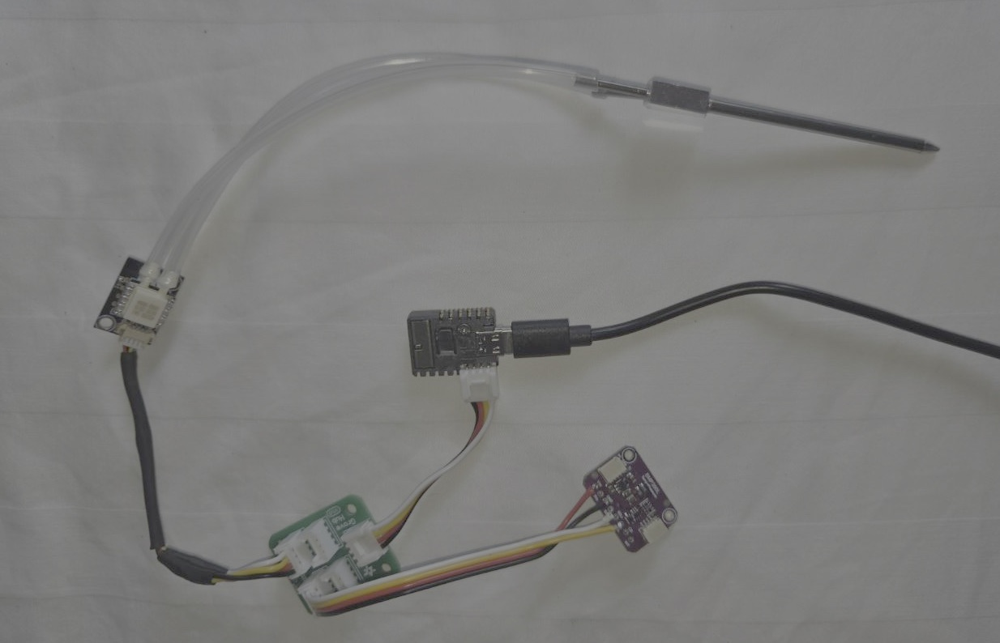
To account for wheel inertia, the total kinetic energy should include translational and rotational components, as all acceleration consumes energy:
Linear Kinetic Energy: depends on the total mass (m) and velocity (v).
Rotational Kinetic Energy: depends on spinning the wheels (moment of inertia I) at angular velocity ω.
For a bicycle wheel, the effective "rotational mass" is roughly equal to the actual mass of the wheel, the Rule of Thumb: 1 kg of wheel weighs 2 kg when accelerating.
For the CdA calculation, use effective mass m_eff instead of static mass. This gives the kinetic-power equation:
P_kinetic = m_eff·a·v
m_eff = m_total + ΣI/r²
m_total: Rider + bicycle + equipment.
I: Moment of inertia of the wheels.
r: Radius of the wheel (approx. 0.335m for 700c).
The I value changes between a climbing wheel and a disc wheel.
| Wheel Type | Approx. Inertia (I) | I/r2 (Add-on Mass) | Total "Inertial Penalty" |
|---|---|---|---|
| Light Climbing Wheel | ≈ 0.10 kg·m² | 1.6 kg | approx. 1.8 kg per pair |
| Deep Section (80mm) | ≈ 0.14 kg·m² | 1.2 kg | approx. 2.4 kg per pair |
| Rear Disc Wheel | ≈ 0.18 kg·m² | 1.6 kg | approx. 3.2 kg (rear only) |
In the Monkey C code, a Moment of Inertia Factor INERTIA_FACTOR for 700c wheels, this factor is roughly 1.03 to 1.05. m_eff = m_total·INERTIA_FACTOR INERTIA_FACTOR = 1.04, is used.
Use a standard install.
To work with BLE the Garmin Simulator needs the Nordic nRF52-DK or nRF52840 Dongle, and associated software. Practically the dongle is the cheapest/simplest solution. Read Garmin's install docs. Flashing the dongle may require going back a few versions to get it working
Referencing BLE in anyway in simulator code without a dongle, will bring the simulator down, these errors can't be trapped in Try/Catch, (at least the mac). If coding/testing without BLE the relevant code must be by-passed. The following parameters in the CdA_Utilities.mc are relevant to development.
const DEBUG = true;
const BLE_DEBUG = true;
var USING_SENSOR = true;
const TESTING_WITH_FAN = true;
DEBUG -- Prints contents if DEBUG print lines
BLE_DEBUG - Prints contents if DEBUG in BLE connection area
USING_SENSOR -- When "false" all code connecting to BLE is bypassed.
TESTING_WITH_FAN -- When "true" assume simulation data generated or a FIT file is being played, with connected airspeed sensor that's pointed at a fan, the value of Air Speed used in the application becomes the ((ground speed from FIT file/Sim) + Sensor Input); this gives a more realistic simulation.
The code is all built with PlatformIO for the ESP32 development – if you select something else, then some playing around with the configuration file will be required.
All sensors used, follow Inter-Integrated Circuit, I2C standard, I-squared-C, a synchronous, multi-device communication protocol used to connect peripherals to microcontrollers. It uses:
SDA (Serial Data): send and receive data bits.
SCL (Serial Clock): clock signal generated by the master device to synchronize the timing of the data transfer.
Sensors supporting I2C will have these pins, but the order and connector sizes are not standard:
Grove standard 2.0mm pitch connector, also called HY2.0 - with buckle.
Qwiic and STEMMA QT standard uses 4-pin JST SH connector with a 1.0mm pitch, the VCC pin always needs checking
1.25mm pitch JST 4-pin connector
All connections need checking, convertors are not generic as pin layouts change, (hint: stay Grove, when possible). Wire splicing is the solution, unless you want to buy 1000 connectors on Alibaba.
A pitot-static tube measures velocity by comparing total pressure with static pressure.
Total Pressure: front-facing opening that points directly into the wind. As the bike moves, the air converts its kinetic energy into pressure.
Static Pressure: small holes located perpendicular to the airflow measure the ambient atmospheric pressure without the influence of the bike's forward movement.
v_air = √[2(P_total − P_static)/ρ]
Note the importance of ρ (air density); it is used in both the v_air calculation and the drag calculation.
The MS4525DO is a differential pressure I2C sensor, show in two form factors below:


AHT20 + BMP280 module is a I2C sensor board providing temperature, humidity, and atmospheric pressure data. It has the AHT20 (humidity/temp) and BMP280 (pressure/temp). Theoretical Sensitivity Limit of approx 11cm, practical 1m. The AHT20 provides temperature accuracy of ±0.3°C, compared with approximately ±0.5°C to ±1°C for the BMP280.
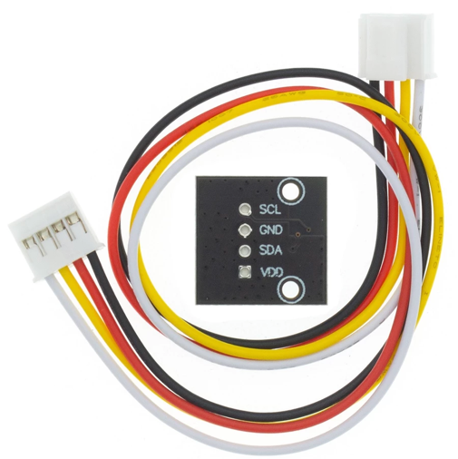

BMP390 is the upgrade to the BMP280. Comparing the BMP390 and BMP280:
Theoretical Sensitivity Limit of approx 1.7cm practical 0.25m (This is the most important benefit of this sensor)
BMP390 and BMP280 are not pin-to-pin compatible and use different addresses.
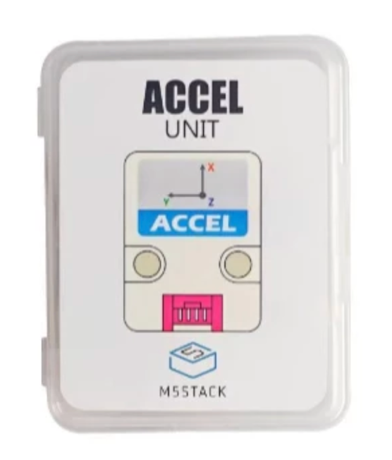
BMP390 measures temperature for internal compensation, this calibrated temperature data published via I2C. Accuracy is ±0.5°C with 0.005°C resolution, making it approximately 0.2°C less accurate than the AHT20.
ACCEL is a motion sensor.. With ADXL 345 and ACC, 3-axis speed can be derived.
• 3-Axis Measurement: Measures acceleration in the X, Y, and Z directions.
• Sensitivity: Measures up to ± 16g with high 13-bit resolution, allowing it to detect tilt changes of less than 1.0°.
• Digital Outputs: Data is output as a 16-bit.
• Communication: cI2C or SPI digital communication protocols.
• Special Features: Includes built-in motion sensing, such as detecting tap/double-tap events, general activity, and inactivity
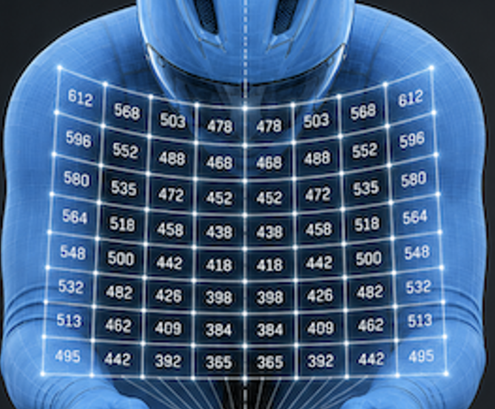
The M5Stack Capsule (ESP32) has BMI270 is a 6-axis Inertial Measurement Unit (IMU), It combines a 3-axis Accelerometer and a 3-axis Gyroscope. I've tested a 1 US accelerometer; the results are compatible with checking the delta velocities.
The VL53L5CX is a time-of-flight (ToF) multi-area sensor, and can measure precise distances regardless of target color and reflectivity. It provides an accurate range of up to 400 cm and operates at high speeds (60 Hz.
The multi-spatial distance measurement system can achieve an area of up to 8x8, 63° wide field of view, which can be reduced with software. The VL53L5CX can detect various objects within its field of view using STF Semiconductor's patented histogram algorithm. The histogram algorithm can also suppress crosstalk of cover slides exceeding 60 cm.
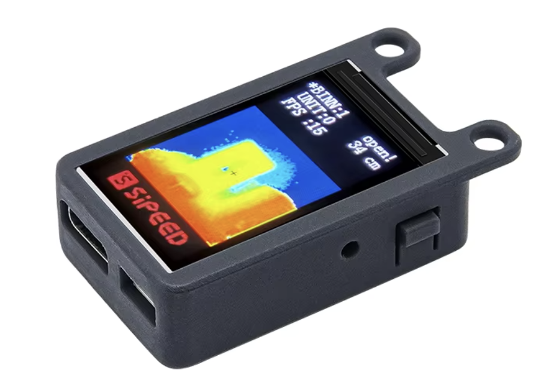
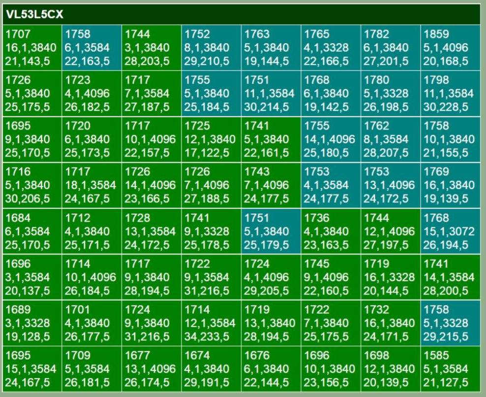
SPAD: Single-Photon Avalanche Diode
Solid-state photodetector. It acts like a digital light switch it can detect and count individual light particles (photons).
SPADs are used in time-of-flight cameras and LiDAR.
kcps/spads stands for kilo counts per second per SPAD, which is a unit of measurement used to quantify light signal strength in advanced photon-detecting and ranging sensors.
Reading the output table Output
Line 1. distance in mm
Line 2. ambient noise kcps/spads, no of valid targets detected, no spads, no spads enabled for range
Line 3. Signal returned to sensor kcps/spads,estimated reflectance in %, Target status (5,9 is ok).
Grove AI Vision Module V2 is an MCU-based vision AI module powered by Arm Cortex-M55 & Ethos-U55. It supports TensorFlow and PyTorch frameworks and is compatible with Arduino IDE. With the SenseCraft AI algorithm platform, trained ML models can be deployed to the sensor without the need for coding. It features a standard CSI interface, an onboard digital microphone and an SD card slot, making it highly suitable for various embedded AI vision projects.
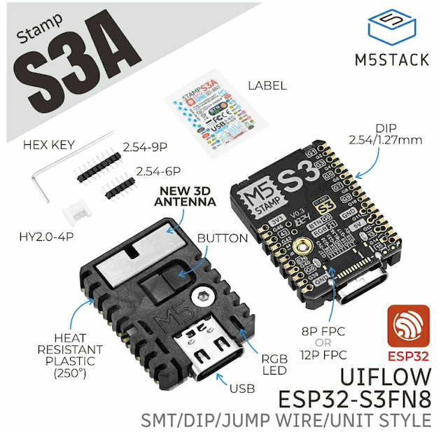
ESP32 logging is optional, so can be switched off completely, ESP32 Non-Volatile Storage (NVS): can use two file systems:
SD Card (SPI): For high-capacity logging.
LittleFS (Internal Flash): A fail-safe if a SD card is not present.
*The "Batch & Flush" Pattern: *
Continual writing to flash or SD cards is "expensive" in terms of time and power, instead:
Data is formatted and appended to a log buffer (a String in RAM)
To protect the Flash/SD card lifespan and prevent "blocking" the CPU during writes:
Data is string buffered in RAM rather than writing to the disk every second.
Triggered Flushing: A block write to storage occurs only when:
30 seconds have elapsed.
RAM buffer exceeds 4KB.
A "Stop Logging" command is received.
Protocol: Uses FILE_APPEND to preserve across reboots.
SD cards can be connected to a notebook to get the data, or the ESP32 can be connected to PlatformIO and LittleFS data extracted. Wireless FTP solutions exist, but not explored here. When connected to PlatformIO, the following commands have been implemented:
The system accepts real-time control via the Serial Terminal or BLE Characteristic writes:
[S] Start/Stop: Toggles the loggingEnabled flag.
[D] Dump: Flushes the buffer and prints the entire CSV log to the terminal.
[V]Dashboard: Toggles a live "flight instrument" view in the serial monitor using \r (carriage return) to update a single line without scrolling.
[M] show options
The [S] Start/Stop:** **can be executed via BLE. If you stop logging via BLE, the loop() logic detects that loggingEnabled is now false and flushes the RAM buffer (log buffer) to the storage device. (if used from the Garmin headset, a delegate command would be attached to the Activity Start/Stop button commands)
Assume the ESP32 sends packets at 4Hz. The Garmin 1 Hz Activity.Info loop and BLE stream do not natively sync, they run on separate internal clocks, that is two independent systems:
BLE Wireless Clock (Asynchronous): ESP32 code controls this clock. Its set 250 milliseconds, (4 Hz, 1/4 second) it fires a data packet, the Garmin BLE hardware catches it and runs the function onCharacteristicChanged(). This happens completely at random relative to what the device is doing.
App UI Clock (Synchronous): Garmin Connect IQ virtual machine controls this clock. Every 1,000 milliseconds (1 Hz, 1 second), it pauses background processes, updates the master Activity.Info object with the latest GPS, speed, and power metrics, and executes compute(info) function.
Because these cycles are decoupled, the 4 Hz packets will land at varying times within that 1-second Garmin window. The 4 Hz packets will be slightly "out of phase" with Garmin's 1 Hz data snapshot.
Timeline (ms): 0ms 250ms 500ms 750ms 1000ms (1 Second)
▼ ▼ ▼ ▼ ▼
ESP32 BLE: [P1] [P2] [P3] [P4] [P5]...
Garmin App: ──────────────────────────────────────────► [compute(info) Loop]
• Updates speed/power
• Refreshes screen
• Runs math formulas
The Timeline Mapping (The Phase Shift)
tWhen compute(info) triggers on the 1-second mark, it pulls the latest metrics that Garmin's internal sensor processor has calculated for that second (e.g., your current power from an ANT+ meter or speed from a hub sensor). The sync looks like this:
0ms: Garmin updates info variables and runs your compute() loop.
210ms: Packet 1 arrives from ESP32. (Stores inside your app memory).
460ms: Packet 2 arrives from ESP32. (Stores inside your app memory).
710ms: Packet 3 arrives from ESP32. (Stores inside your app memory).
960ms: Packet 4 arrives from ESP32. (Stores inside your app memory).
1000ms: Garmin triggers the next compute(info) loop.
When that 1000ms mark hits, Packet 4 is only 40 milliseconds old, but Packet 1 is 790 milliseconds old, this creates data skew alignment error. Two synchronization strategies:
Strategy A: The Centered Block Average (the one used)
Assume the average of those 4 packets represents the true environmental state of that specific elapsed second.
When compute(info) runs, you take the average/sum fo alt diff, of the 4 buffered packets and pair it directly with the single info.currentPower and info.currentSpeed value. This smooths out the phase shift.
Code snippet
// Inside compute(info)
if (packetBuffer.size() > 0) {
var averageSensorValue = calculateBufferAverage(); // Smooths P1, P2, P3, P4
packetBuffer = []; // Clear buffer for next second
// Sync achieved: 1-second average vs 1-second Garmin snapshot
var currentCdA = calculateCdA(
info.currentPower,
info.currentSpeed,
averageSensorValue
);
}Strategy B: Time-Stamping via System Clocks (one considered but too hard - as a note)
Tag each incoming 4 Hz packet with the exact millisecond it arrived using Garmin's system timer.
Code snippet
// Inside BLE callback (runs 4x a second)
function onCharacteristicChanged(characteristic, value) {
var rawMetric = value.decodeNumber(
Lang.NUMBER_FORMAT_FLOAT,
{:offset => 0}
);
var arrivalTime = System.getTimer(); // Milliseconds
// Store the value and the time it arrived
packetBuffer.add([rawMetric, arrivalTime]);
}When compute(info) fires, look at the timestamps of 4 Hz data to see how close they were to the 1 Hz execution boundary, allowing data weighting or discarding packets that arrived too close to the edge of the clock cycle. Too hard to play with and consumes lots of processing - the simulator also has trouble.
All great toys.
The M5Stamp-S3A supports 2.4 GHz Wi-Fi and Bluetooth 5 (BLE). These are dual core processors, (Cs are single core, which the code supports). One core handles sensor, the other manages BLE communications. M5Stamp-S3A costs around 10 USD.

The expansion board adds a battery holder, and simplifies the connection of I2C sensors with Grove ports. Around 6 USD.
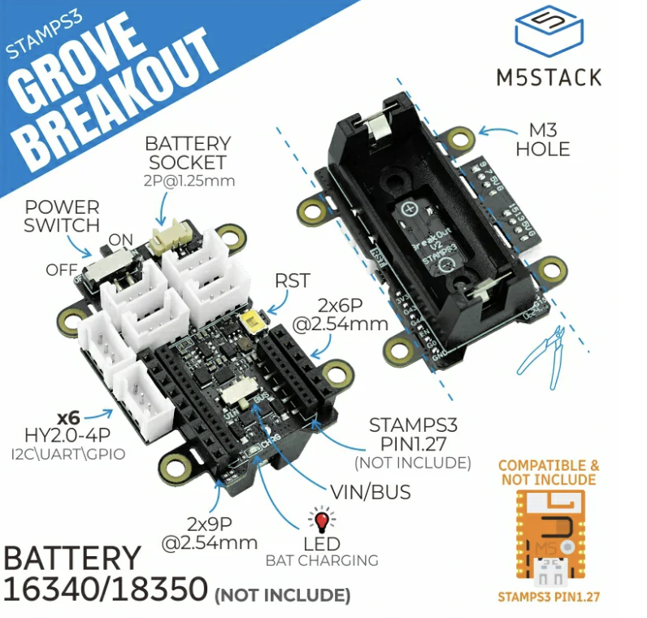
(Only the 16340 fits)
The M5Stack Capsule is a pill-shaped development kit built around the M5StampS3. It’s the most suitable for building the home solution, it would need a 2 I2C adapter, and will minimize all wiring and control. (Not shown, as mine hasn't arrived
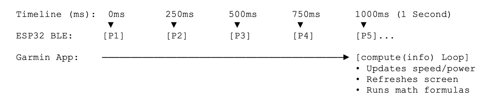
Features:
Enclosure: A compact, protective plastic shell that houses the electronics, making it more durable for outdoor environments.
Battery & Power: Has an internal 250mAh lithium battery and built-in charging circuit.
Grove Port: A HY2.0-4P connector to external I2C units, such as I2C breakout adapter.
Buttons: Includes a multi-function button for input and a reset button accessed through the shell – this saves command programing in Gramin, e.g.: start/stop logs.
BMI270: built in gyroscope and acceleration sensor.
Timing: This module has a clock, so debugging output can have actual time stamps, without a specialized sensor, other solutions time stamp, is the duration since logging started.